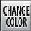
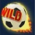
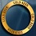
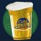

5-Reel 20-line Slots
The objective of Football Fans is to obtain winning symbol combinations by spinning the reels.
To play the game:
- Line bets are chosen by clicking + and – below Line Bet to increase or decrease the amount.
- Paylines can be activated and their shape displayed by progressively clicking + and – below Lines. Paylines can also be activated by using the numbered buttons on either side of the reels. Selecting a high payline includes all the lower ones too. For example, selecting payline 6 also activates paylines 1 through 5. Clicking Bet Max activates all paylines with the currently selected bet per line and spins the reels.
- Total bet per game round = line bet X active paylines.
- Clicking Spin spins the reels with the current selection of lines and line bets. During the reel spins the Spin button changes intoStop. Clicking Stop ends the spin animation and immediately displays the spin result.
- Reels can also be spun using the Auto Play function. Mouse over the Auto Play button to display the list of options. Select the number of spins to be played automatically or choose ‘Until Feature’ to spin until the Free Games round is triggered. Clicking on an option starts the Auto Play function. The Auto Play button changes into Stop during the Auto Play mode. The Auto Play mode ends when the reels have been spun the number of times determined by the player, or when a Free Games round is triggered if you chose ‘Until Feature’, or when you click Stop.
- Wins are calculated according to the paytable. Line win = line bet X corresponding multiplier according to the paytable. Scatter win = total bet X corresponding multiplier according to the paytable. The paytable can be accessed via the Info page.
- On a given payline, only the highest payline winning combination pays while simultaneous winnings on different paylines are accumulated.
- In the case of a winning spin, the Win field displays the accumulating winnings. The Win ticker can be stopped by clicking anywhere on the screen to display the total win amount immediately.
- Payline wins and the total win are also displayed on the strip located at the bottom of the reels or the game window.
Info page:
- Clicking Info opens the reference screen describing different game components. Clicking the arrow buttons at the lower right-hand corner of the screen enables navigating between the different info screens.
- The Paytable screen shows all winning combinations. When opened after a winning spin, the winning symbol combinations (number of symbols and bet multiplier) are highlighted and blink.
- The Free Games screen describes the symbol combinations necessary to trigger the Free Games feature and describes the Free Games feature rules.
- The Grab a Beer Feature screen describes the Grab a Beer feature rules.
- Clicking Show Paylines on the Paytable page, opens a screen that illustrates all possible payline combinations. Clicking Hide Paylines closes this screen and returns to the Paytable page.
- Clicking Back exits the Info screen and returns to the game.
Paylines:
- Active paylines are represented by lines that appear over the reels. Paylines can be activated and their shape displayed by progressively clicking + or – below Lines.
- Only active paylines can register wins.
- There is a difference between the line bet and the total bet. The line bet shows how much is being bet on a single payline. The total bet shows how much is being bet in total on the game round. Payouts shown in the paytable are multiplied by the line bet.
The Scatter symbol is an exception to these rules. More information about the Scatter symbol can be found below.
About payouts:
- Payouts are listed on the Paytable screen. To find the possible win amount, the line bet must be multiplied by the payout.
- If two payline winning combinations occur on the same line, the higher of them is paid out. If more than one active payline has a winning combination, the winnings are accumulated.
- Winning combinations can only be on an active payline, must start from the leftmost reel and the symbols have to be consecutive.
The Scatter symbol is an exception to these rules. More information about the Scatter symbol can be found below.
Maximum Win Limit
The maximum win in the game has an upper limit. For more information, see the Terms and Conditions section.
Choose Your Color Feature
The Choose Your Color feature can be activated at any time during main game, while the reels are not spinning. To do that, click on theChange Color button  at the upper left corner of the screen – a dropdown menu with seven different national flags appear, corresponding to the seven national teams available in the game. The player chooses a team by clicking on the respective national flag, thus thematically changing the colours of the Royal and the Hat symbols.
Wild symbol
The Wild symbol  can stand for any other symbol, except Scatter, to make the best possible winning combination.
There is also a separate payout for two or more Wild symbols on an active payline, as seen in the Paytable. This is paid out instead of the regular symbol win if the win amount from Wilds is larger than the win from the regular symbols (by Wild standing in).
Scatter symbol
The Scatter symbols do not have to occur on any particular payline. If there are two or more Scatters in any position in the spin results, the payout earned is multiplied by the total bet and added to payline winnings.
If three or more Scatter symbols appear in any position on the reels simultaneously during main or Free Games, 10 Free Games with Random Wilds are won.
Grab A Beer Feature
To use this feature, place the Cold Beer circle  on one of the reel positions by clicking on the desired place before spinning the reels. If after a spin, the Cold Beer  symbol ends up under that circle, 3 X the total bet is awarded. The target remains in its last position for any following spins unless you relocate it. There is also a separate payout for two or more beer symbols on an active payline, as seen in the Paytable.
The Grab a Beer feature is available only during main game.
Free Games
Three or more Scatters in any position on the reels simultaneously during main game trigger 10 Free Games with Random Wilds. After every spin ‘penalty kicks’ randomly turn symbols on the reels into wilds. 0-3 symbols turn into wild every time. Random Wilds substitute for all symbols, except Scatter. Scatter wins are paid before random wilds are distributed. Only 1 Random Wild symbol will appear on a reel during that spin.
3 or more Scatters during Free Games retrigger 10 more Free Games with the same rules.
The Choose Your Color and the Grab a Beer features are not available during Free Games.
To start the Free Games, click on Click to Start.
During the Free Games, the reels are spun automatically using the same number of lines and bets per line as on the spin that won the Free Games. After each spin, the win is displayed in the Win field. The Free Games Win field shows the accumulated winnings from the current Free Games.
After all Free Games have been completed, a result board summarizes the winnings. Game win shows the winnings that were received from the spin that won the free games. Feature win shows the winnings that were received during the Free Games. Total win shows the aggregate winnings (Game Win and Feature Win added up).
If Free Games are triggered during the Auto Play mode, the feature begins after the player clicks on Click to Start. When all Free Games have been played and the player clicks Continue on the screen summarizing the Free Games win, the Auto Play mode resumes. When returning to the main game, clicking anywhere on the screen stops the win ticker and displays the full prize.
Clicking Continue will return you to the main game. When returning to the main game, clicking anywhere on the screen stops the win ticker and displays the full prize. Free Game wins are added to the payline and Scatter wins.
Return to Player
The theoretical percentage return to player (RTP) is 96.09%.